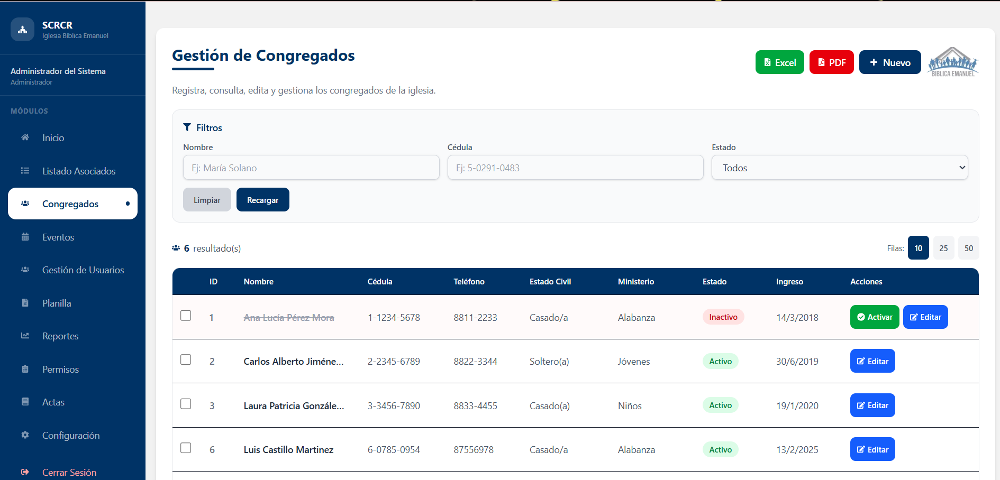
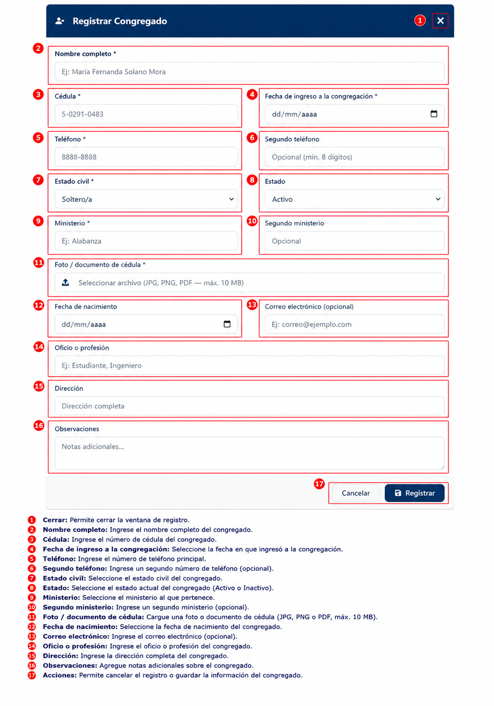
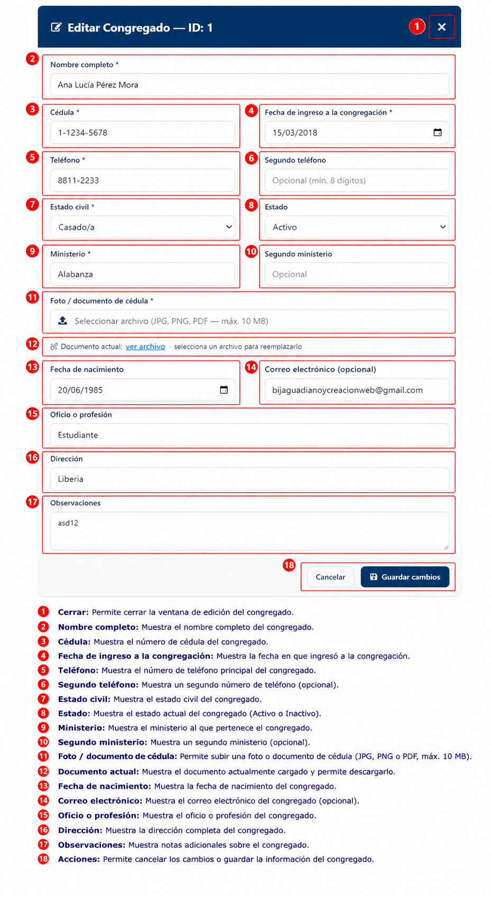
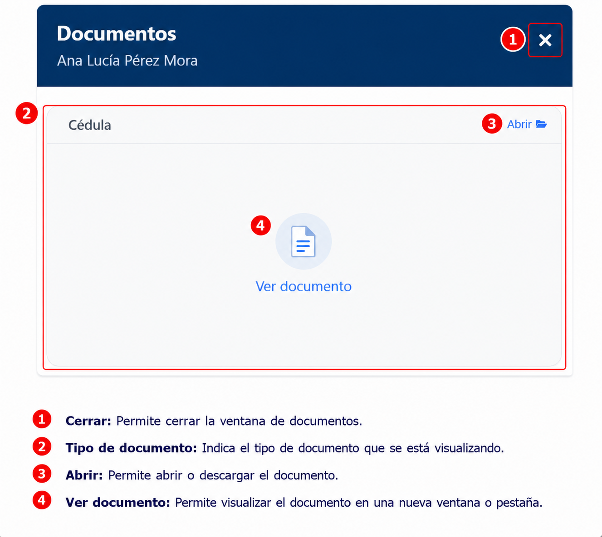

Congregados
Descripción
El módulo Congregados permite registrar, consultar y administrar la información de los miembros congregados de la iglesia.

Funcionalidades principales
- Consultar congregados registrados.
- Buscar congregados por nombre, cédula o estado.
- Filtrar registros por estado.
- Exportar información a Excel y PDF.
- Registrar nuevos congregados.
- Editar información existente.
- Activar congregados inactivos.
Uso del módulo
- Ingrese los criterios de búsqueda en los filtros disponibles.
- Presione Recargar para actualizar los resultados.
- Use Limpiar para restablecer los filtros.
- Seleccione Excel o PDF para exportar la lista.
- Presione Nuevo para abrir el formulario de registro.
- Use Editar o Docs en la tabla para administrar cada registro.
Registrar Congregado
Para registrar un nuevo congregado, haga clic en Nuevo desde el listado.

Campos del formulario
- Nombre completo
- Cédula
- Fecha de ingreso a la congregación
- Teléfono
- Segundo teléfono (opcional)
- Estado civil
- Estado (Activo / Inactivo)
- Ministerio
- Segundo ministerio (opcional)
- Foto/documento de cédula (JPG, PNG, PDF, máx. 10 MB)
- Fecha de nacimiento
- Correo electrónico (opcional)
- Oficio o profesión
- Dirección
- Observaciones
Acciones del registro
- Cancelar: Cierra la ventana de registro.
- Registrar: Guarda el nuevo congregado en el sistema.
!!! NOTA
Los campos marcados con un asterisco (*) son obligatorios y deben completarse para registrar la información del congregado.
Editar Congregado
Para modificar la información de un congregado, seleccione Editar desde el listado principal.

Qué puede cambiar
- Nombre completo
- Cédula
- Fecha de ingreso a la congregación
- Teléfono y segundo teléfono
- Estado civil
- Estado (Activo / Inactivo)
- Ministerio y segundo ministerio
- Foto/documento de cédula
- Fecha de nacimiento
- Correo electrónico
- Oficio o profesión
- Dirección
- Observaciones
Acciones de edición
- Cancelar: Deshace los cambios y cierra la ventana.
- Guardar cambios: Actualiza la información del congregado.
!!! NOTA
Los campos marcados con un asterisco (*) son obligatorios. Si alguno está vacío, el sistema no permitirá guardar los cambios.
Visualizar documentos de un congregado
Para revisar los documentos adjuntos, seleccione Docs desde la lista de congregados.
